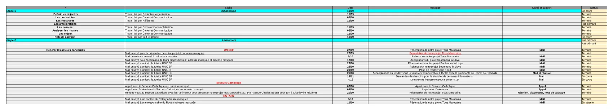
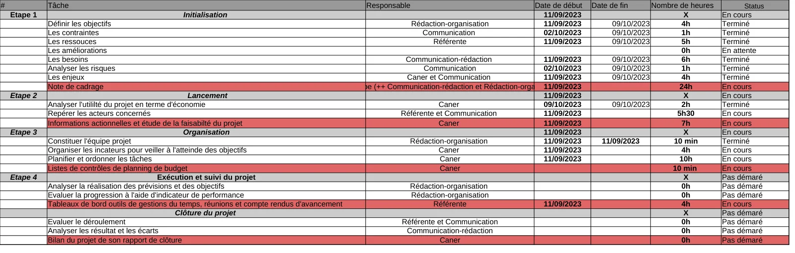

Gestion de projet · BC1 · BUT 1
Niveau 1 : Participer à la réalisation d’un projet
Niveau attendu en première année : novice. 7 apprentissages critiques, chacun avec ce qu’il recouvre, la situation où je l’ai travaillé et mes traces.
Apprentissages critiques du niveau 1
- AC11.01
Communiquer avec les acteurs du projet
Identifier qui intervient dans le projet (commanditaire, équipe, tuteur) et lui transmettre au bon moment une information claire : point d’avancement, compte rendu, relance.
Chef de projet de « Soutenons la Libye », j’étais l’interlocuteur direct de nos enseignants tuteurs et je participais aux réunions avec notre tutrice, déléguée de l’UNICEF Champagne-Ardenne. Pendant que d’autres membres de l’équipe recherchaient des associations, j’ai passé les appels avec le chargé de communication ; parmi les structures contactées figuraient le Rotary Club, le Secours catholique et l’UNICEF. J’ai créé le tableau de communication, qui consigne pour chaque acteur la date, le type de demande, le moyen de contact et le statut de la réponse. La semaine du 11 mars 2024, l’équipe a présenté le projet dans près de huit classes et envoyé deux vagues de mails.
TracesTableau de communicationExcelRapport de projet, mai 2024 (groupe)PDF

Tableau de communication : chaque contact, sa date, son message, son canal et son statut. Noms et coordonnées masqués. - AC11.02
Compléter les outils de suivi
Tenir à jour les supports qui servent à piloter le projet, comme le planning, le diagramme de Gantt, la liste des tâches ou le budget, pour que chacun sache où en est le travail.
J’ai créé le planning de Gantt et je le tenais à jour : chaque semaine, j’y saisissais les tâches décidées en groupe, avec un responsable, des dates, un volume d’heures et un statut. Le code couleur signale l’urgence en rouge, le retard en jaune, l’en-cours en vert et le terminé en bleu. Tout le groupe avait accès au fichier pour se repérer. Le classeur réunit aussi le tableau de communication, un plan d’actions avec cibles, objectifs et supports, et le tableau des budgets.
TracesClasseur de pilotage (production personnelle)ExcelNote de cadrage (groupe)PDF

Planning de Gantt : tâches, responsables remplacés par leur rôle, dates, heures et statut. 
Plan d’actions : cibles, objectifs, supports et statut de chaque action. - AC11.03
Évaluer l’atteinte des résultats par rapport aux objectifs fixés
Comparer ce qui a été produit avec ce qui était prévu, à partir d’indicateurs simples, et dire franchement si l’objectif est atteint, en partie atteint ou manqué.
Nous visions au moins 300 € de dons et entre 16 et 30 joueurs pour le tournoi FC 24. Le tournoi a réuni 16 participants, objectif atteint. La cagnotte a atteint 258 €, soit 86 % de l’objectif, avec 17 dons. Nous avons chiffré l’apport de chaque action : 118 € grâce au passage dans les classes, 90 € pour le tournoi, 25 € pour les flyers et 25 € pour les réseaux sociaux et les mails.
Avec le recul, l’évaluation du projet relève trois erreurs : trop peu de publications, puisque le compte TikTok est resté vide, une cible choisie trop tard, et un questionnaire de satisfaction préparé deux jours après le tournoi au lieu d’avant.
TracesRapport de projet, évaluation (groupe)PDFStatistiques de la cagnotte team.unicef

Statistiques de la cagnotte sur team.unicef : 258 € collectés, 86 % de l’objectif, 17 dons. - AC11.04
Lier les éléments du cahier des charges avec les enjeux du projet
Lire un cahier des charges en comprenant pourquoi chaque exigence existe, et relier chaque attente du commanditaire à l’enjeu qu’elle sert : coût, délai, qualité ou image.
La note de cadrage posait le cadre du projet : objectifs quantitatifs et qualitatifs, périmètre, acteurs, rétroplanning, ressources, communication et risques. J’en ai préparé les enjeux, les contraintes et l’analyse des risques avec le chargé de communication. Chaque choix y renvoie à un enjeu : une cagnotte officielle de l’UNICEF assurait que les fonds iraient aux enfants, et le QR code imprimé sur chaque affiche répondait au risque de manque de visibilité.
TracesNote de cadrage, version finale de décembre 2023 (groupe)PDFClasseur de pilotageExcel

Note de cadrage : objectif du projet et objectifs quantitatifs. - AC11.05
Lire un budget
Repérer dans un budget les postes de dépenses et de recettes, comprendre d’où viennent les montants et vérifier que le projet reste dans l’enveloppe prévue.
J’étais chargé de la liste des budgets. Le tableau compare pour chaque action une estimation haute et basse des recettes et des dépenses, par exemple de 100 à 500 € de recettes pour le tournoi face à 180 à 200 € de dépenses. Le classeur relève aussi les prix Metro produit par produit, avec prix unitaire, prix de vente et bénéfice : une canette achetée 0,45 € pour une revente prévue à 1,50 €. Pour le tournoi, nous avons chiffré trois scénarios ; avec 16 joueurs à 8 €, il restait 78 € pour la cagnotte une fois les 50 € de lots déduits. Le droit d’entrée, prévu à 10 € avec la vente de boissons et de sucreries, est finalement passé à 8 €. En comptabilité, j’ai appris à lire un compte de résultat et un bilan, puis à calculer SIG, CAF, fonds de roulement et besoin en fonds de roulement.
Avec le recul, l’évaluation du budget nous a pris une semaine entière, un temps que nous aurions pu mieux gérer. Le stand de vente en grande surface n’a pas pu se faire, faute de produits à prix compétitifs et de partenariat ; c’est le tournoi qui a pris le relais.
TracesTableau des budgets et prix MetroExcelScénarios du tournoi, rapport de projetPDFFiches de pilotage comptable R2.05

Tableau des budgets : estimations haute et basse des recettes et des dépenses par action. 
Prix relevés chez Metro : prix du paquet, prix unitaire, prix de vente et bénéfice par produit. - AC11.06
Générer des idées au sein d’ateliers de créativité
Proposer des pistes lors d’un brainstorming ou d’une carte mentale, rebondir sur celles des autres, puis aider le groupe à trier et à retenir les plus réalistes.
Quand j’ai rejoint l’équipe, deux semaines après le lancement, l’idée d’une mutuelle étudiante venait d’être écartée. Nous avons envisagé un ciné-débat sur le handicap, puis une aide au Maroc après le séisme de septembre 2023, impossible à porter sans association partenaire ; l’UNICEF nous a alors orientés vers la Libye. Les séances de projet ont fait naître les actions : tournoi FC 24, stand, passage dans les classes, appel aux influenceurs. En expression-communication, j’ai aussi imaginé seul L’ALP, un restaurant de luxe à Paris où un chef étoilé différent prend la cuisine chaque semaine, avec son logo réalisé sur Canva, sa charte graphique et son communiqué de presse.
TracesCharte de projet, rapport de projet (groupe)PDFDossier de création du restaurant L’ALP (individuel)PDF

Charte graphique du restaurant L’ALP : logo, couleurs, typographie et règles d’usage. - AC11.07
Tenir compte des champs de connaissances transversaux au projet
Faire appel aux savoirs des autres matières, droit, comptabilité, marketing ou langues, dès qu’une question du projet les touche.
Le projet a croisé plusieurs matières : le marketing pour fixer des objectifs SMART, segmenter, se positionner et dresser un SWOT, la comptabilité pour le budget, et le droit. Celui-ci est entré en jeu avec les règles de la mairie de Charleville-Mézières pour l’impression des affiches, puis quand l’UNICEF a décidé de partager les dons entre la Libye et le Maroc : des donateurs auraient pu y voir un abus de confiance, et un compte rendu avec l’association a permis de clarifier la destination de la cagnotte.
TracesTableau des risques et son volet juridique, rapport de projetPDFDemande d’impression à la mairieNote de cadragePDF

Gestion des risques dans le rapport de projet, avec une colonne d’analyse du cadre juridique.


Bilan du niveau 1
Points forts : piloter une équipe de cinq jusqu’au bout malgré deux changements de sujet, obtenir le partenariat de l’UNICEF et tenir à jour les outils de suivi.
À renforcer : la communication numérique, le choix de la cible dès le lancement et une évaluation préparée avant l’événement.
Pour la suite : au niveau 2, chiffrer les projets et évaluer les risques plus tôt, avec ces trois leçons en tête.